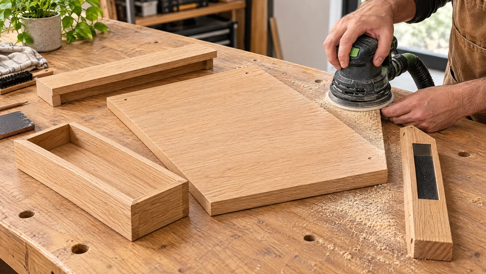
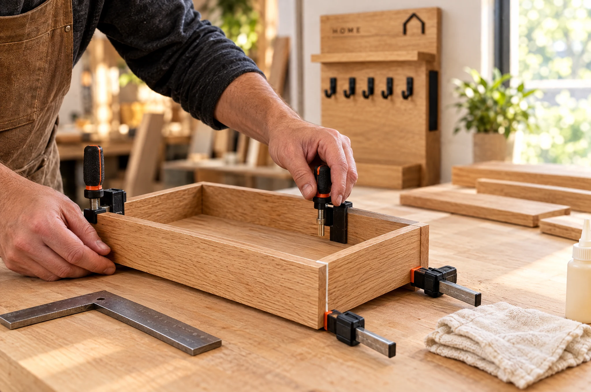
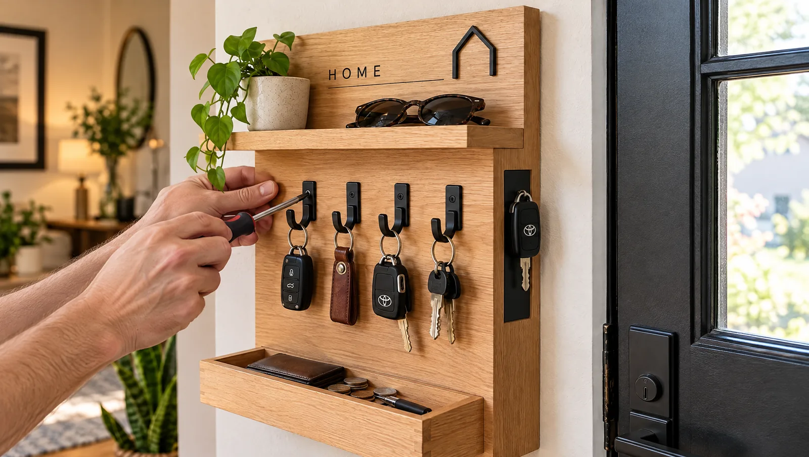

Materiál
- zadná drevená doskacca 32 × 55 cm
- horná poličkacca 28 × 8 cm
- diely spodnej vaničkydrevo 10–18 mm
- čierne háčiky5 ks
- neodýmové magnety1–3 ks
- olej / matný lakpovrchová úprava
NOVÝ PROJEKT · DOMÁCNOSŤ
Kompaktný vstupný organizér z dreva a čierneho kovu. Päť háčikov, horná polička, spodná vanička a skrytý magnetický bod na veci, ktoré chceš odložiť jedným pohybom.
 SCHVÁLENÝ MASTER VIZUÁL
SCHVÁLENÝ MASTER VIZUÁL
ČO MÁ VYRIEŠIŤ
Projekt kombinuje odkladanie, zavesenie aj magnetické prichytenie. Cieľom nie je dekorácia, ale malá stanica pri dverách, ktorú človek začne používať automaticky každý deň.
drevo + čierny kov
5 háčikov + magnet
MATERIÁL & NÁRADIE
Rozmery ešte doladíme podľa finálneho master vizuálu. Konštrukčný princíp však zostane rovnaký.
PRACOVNÝ POSTUP
Toto je základ návodu. Fotorealistické obrázky budeme v ďalších krokoch nahrádzať konzistentnou sériou a pri vybranom úkone pridáme krátke Higgsfield video.
KROK 01 · NÁVRHNÁVRH A ROZMERANIE
Na jednoduchý náčrt si zakresli celkový rozmer, hornú poličku, päť háčikov, spodnú vaničku aj magnetickú zónu. Rozloženie si tak overíš ešte predtým, než začneš rezať drevo.
KROK 02 · REZANIEREZANIE DIELOV
Podľa náčrtu si priprav zadný panel, hornú poličku, diely spodnej vaničky a bočný prvok. Keď sú všetky kusy narezané v jednej etape, ľahšie udržíš rovnaké rozmery a pravé uhly.

KROK 03 · BRÚSENIEBRÚSENIE
Po rezaní odstráň stopy po píle a nerovnosti. Najprv prebrús plochy, potom jemne zraz ostré hrany, aby sa organizér príjemne držal a povrchová úprava neskôr sadla rovnomerne.

KROK 04 · SPODNÁ VANIČKASPODNÁ VANIČKA
Najprv si vaničku poskladaj nasucho a skontroluj, že diely sedia bez pnutia. Potom nanes tenkú vrstvu lepidla, zrovnaj predný diel aj boky a až nakoniec ich stiahni svorkami.
HORNÁ POLIČKA
Hornú poličku najprv usaď nasucho, pritiahni svorkami a uholníkom skontroluj pravý uhol. Až potom ju upevni skrytým spojom alebo skrutkami zo zadnej strany, aby čelná plocha ostala čistá.

KROK 06 · HÁČIKY + MAGNETKOV + MAGNET
Rozmeraj päť rovnakých pozícií pre čierne háčiky a dotiahni ich v jednej línii. Magnetickú časť usaď tak, aby prirodzene nadväzovala na bočný čierny prvok a z čelnej strany nepôsobila rušivo.
Krátka image-to-video ukážka zachováva rovnaký výrobok a demonštruje, ako fungujú háčiky aj magnetická časť.
POVRCH + MONTÁŽ
Nanesi tenkú vrstvu oleja alebo tvrdého voskového oleja v smere vlákien, po chvíli zotri prebytok a nechaj povrch vytvrdnúť podľa návodu výrobcu. Až potom organizér ukotvi na stenu skrytým spôsobom a vyskúšaj ho s reálnymi kľúčmi a drobnosťami.
Pri kroku 06 sme spojili schválený master vizuál s Higgsfield image-to-video: krátky pohyb ukazuje zavesenie kľúčov aj magnetickú zónu bez toho, aby sa menil charakter výrobku. Ak sa tento spôsob osvedčí, rovnaký workflow použijeme aj pri ďalších návodoch.
HOTOVÝ PROJEKT
Od papierového návrhu cez rezanie, brúsenie, lepenie a montáž až po olej a zavesenie na stenu. Rovnaký master výrobok sme držali naprieč celým návodom a pri kroku 06 sme pridali aj krátku Higgsfield ukážku pohybu.
Prejsť si postup znova ↑